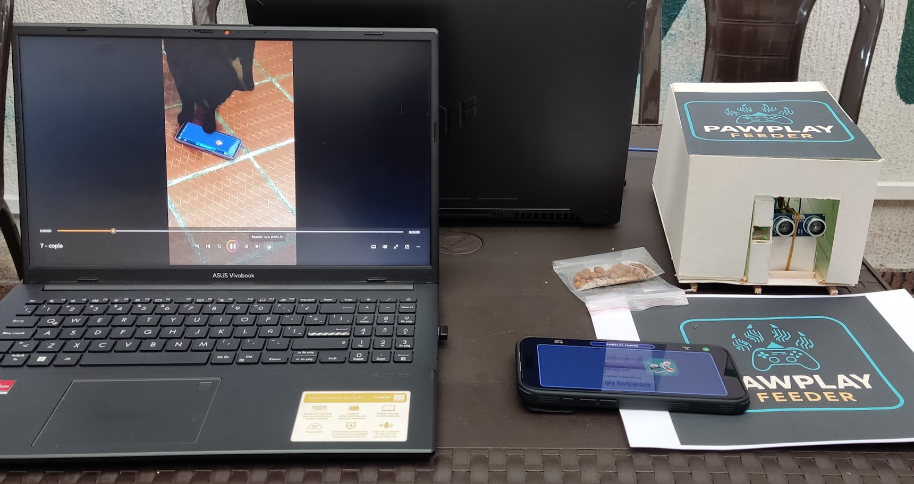
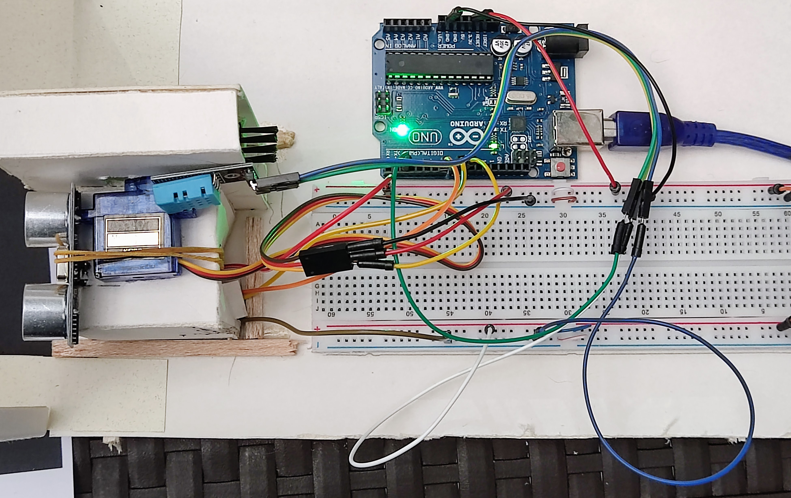
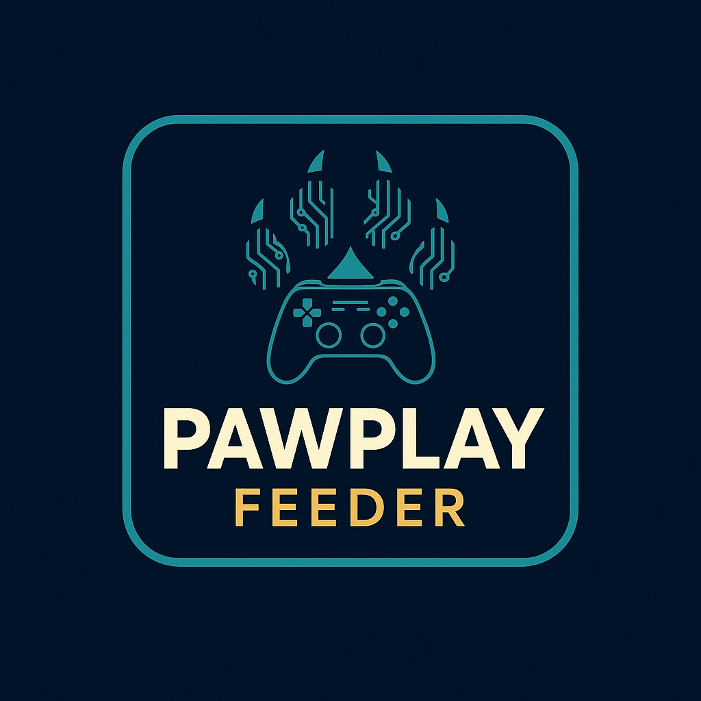
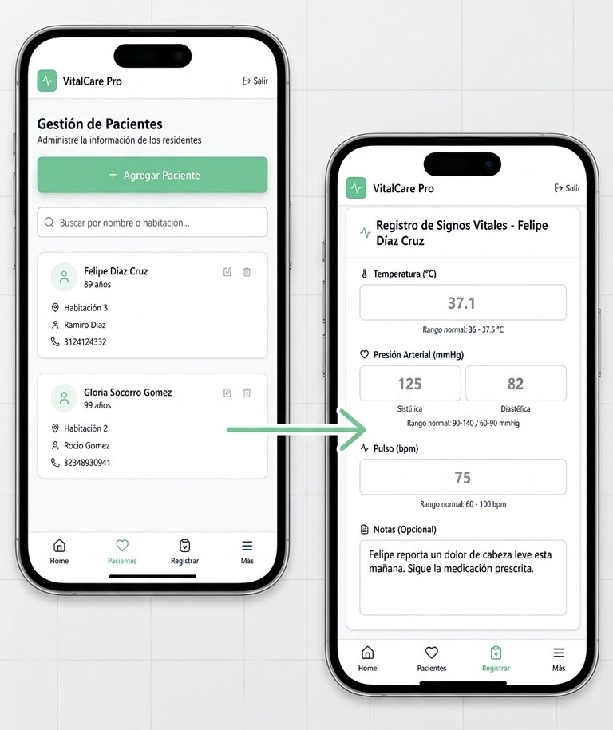
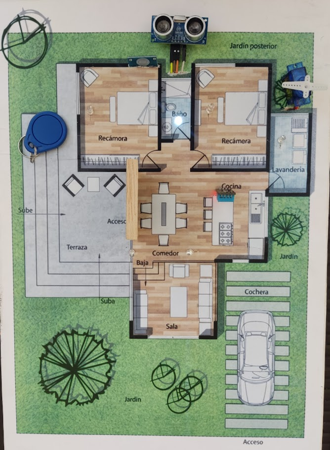
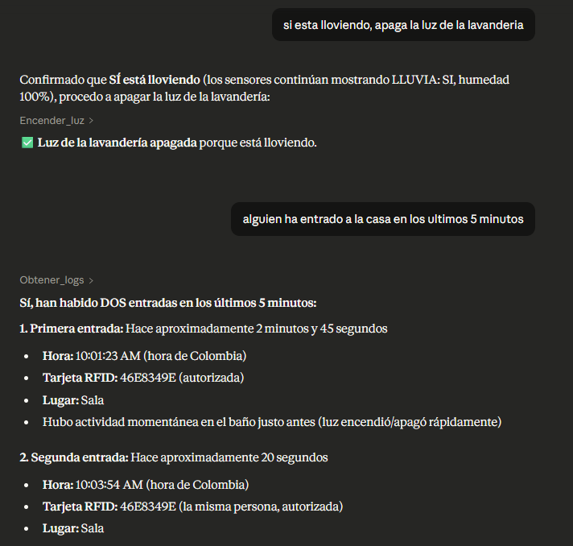
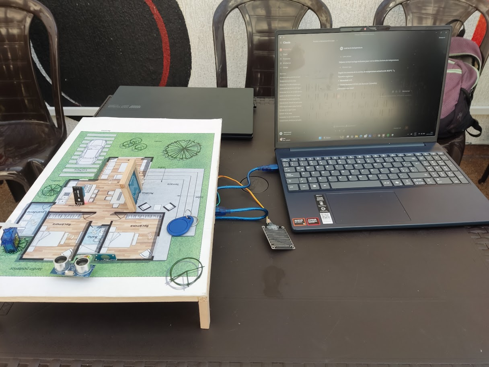
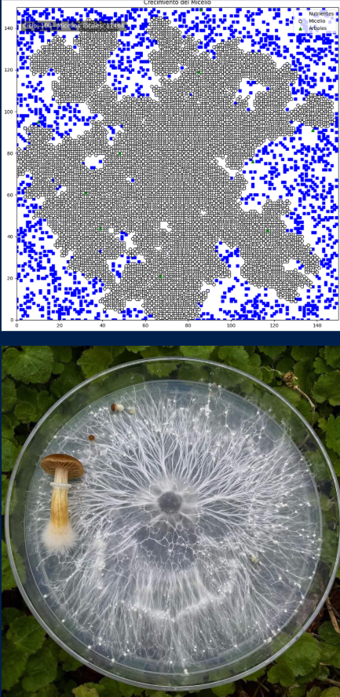

Estudiante de Ingeniería de Sistemas y Computación
Desarrollo y prototipo soluciones con software, IoT e inteligencia artificial.



Automatizando la alimentación de gatos de forma gamificada para activar sus instintos.
Problema: Muchos gatos de interior enfrentan sedentarismo y obesidad por rutinas de alimentación poco estimulantes.
Enfoque: PawPlay Feeder combina automatización de comida con dinámicas de interacción para activar conducta y movimiento.
Aporte a calidad de vida: Promueve hábitos más saludables, reduce riesgos asociados al sobrepeso y mejora el bienestar diario de la mascota.

Monitoreo inteligente de adultos mayores para un cuidado continuo, claro y oportuno.
Problema: El seguimiento manual de pacientes suele ser fragmentado y dificulta decisiones oportunas en cuidado geriátrico y familiar.
Enfoque: Plataforma con captura IoT de signos vitales y apoyo de IA para convertir datos clínicos en reportes claros para cuidadores y profesionales.
Aporte a calidad de vida: Mejora el acompañamiento del paciente, facilita intervenciones tempranas y da mayor tranquilidad a familias y equipos de cuidado.



Control inteligente del hogar con IA vía MCP, permitiendo gestionar dispositivos con lenguaje natural y recibir respuestas claras en el mismo formato.
Problema: Los hogares inteligentes suelen exigir múltiples apps y comandos técnicos, lo que dificulta una experiencia fluida para usuarios no especializados.
Enfoque: Uso de IA por medio de MCP para orquestar diferentes dispositivos desde instrucciones en lenguaje natural, con retroalimentación contextual también en lenguaje natural.
Aporte a calidad de vida: Introduce una interacción más intuitiva e innovadora, reduce fricción en tareas diarias y mejora la experiencia del usuario con herramientas modernas de IA.

Proyecto de biomimética que toma inspiración en la organización de los hongos para diseñar algoritmos bioinspirados de formación eficiente de redes y rutas.
Problema: Diseñar redes y rutas eficientes en entornos dinámicos y cambiantes es complejo, especialmente cuando las condiciones varían como ocurre en el suelo o en sistemas sociales humanos.
Enfoque: Observación de cómo los hongos estructuran sus redes miceliales para replicar ese fenómeno en una simulación computacional y construir un algoritmo bioinspirado adaptable.
Aporte a calidad de vida: Propone estrategias de conexión más resilientes y eficientes que pueden aplicarse a escenarios tecnológicos y sociales donde se requiere adaptación continua.
Estudiante de Ingeniería de Computación con experiencia en el desarrollo de soluciones de software innovadoras tanto en backend como en frontend, aplicando de forma efectiva tecnologías modernas como inteligencia artificial e internet de las cosas. He estado involucrado en todas las etapas del desarrollo de software (requerimientos, diseño, implementación, pruebas y despliegue) asegurando coherencia técnica y entrega de valor en cada iteración y en el producto final. Me interesa crear software práctico, de alta calidad y orientado a resolver problemas reales, integrando hardware y software cuando el proyecto lo requiere.
Universidad de Caldas | 9no semestre
SENA